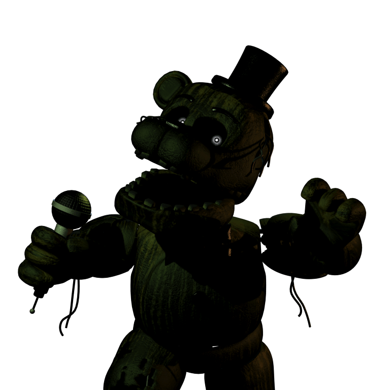

Фантом Фредди

Результат осветления
Он фантом медведя Фредди. Он появляется за окном в третьей ночи. Он медведь темно-зелено угольного цвета. Отразить его атаку можно только включив один из планшетов. Если он упал, то его атаку не отразить. После атаки он ломает систему вентиляции, которую нужно чинить. У него отсуствует половина правой ноги. У него шляпа и микрофон как новые, а сам фантом плохо выглядит. У него отсуствует левое ухо. Из его правой глазницы торчат провода.
В Ultimate Custom Night
Фантом Фредди — он постепенно появляется в офисе. Чтобы он исчез, надо посветить на него фонариком. В противном случае он на вас нападет.
Он выглядит как Золотой Фредди, из-за торчащих проводов, отсуствуещего левого уха, желтоватого цвета (результат осветления).
Фантом Фредди
Результат осветления